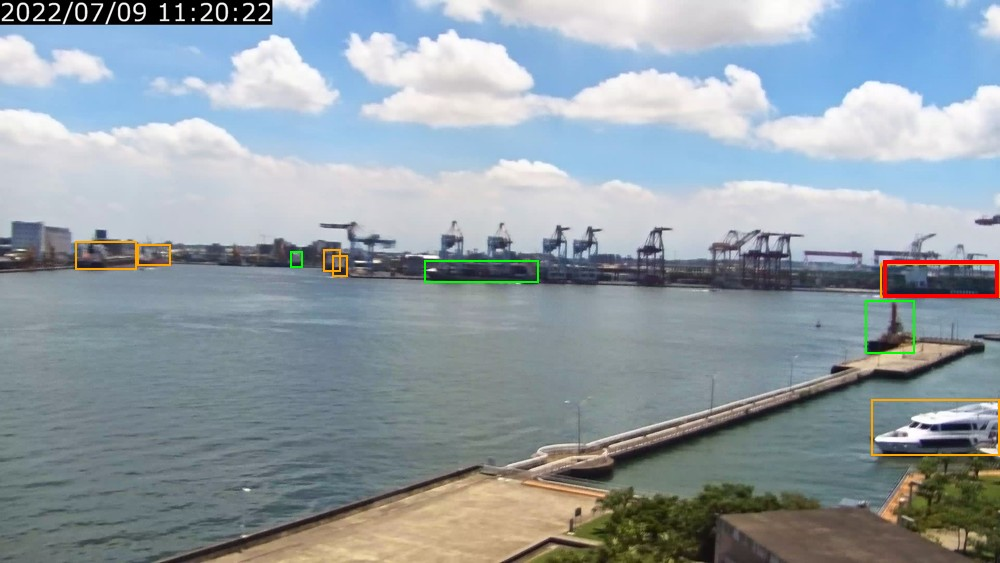
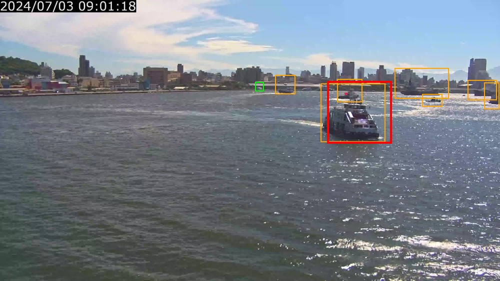
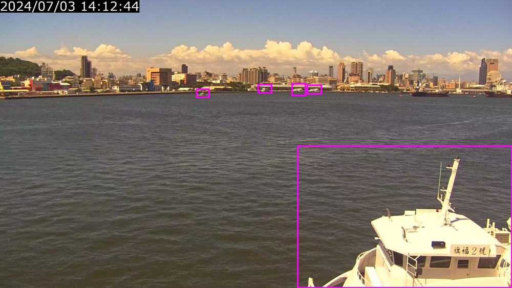
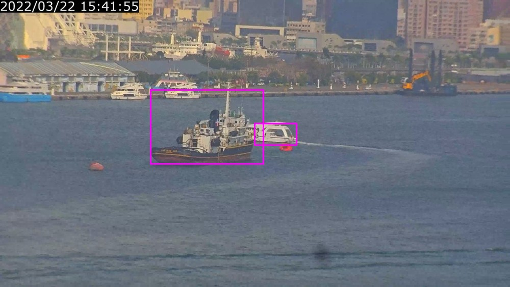
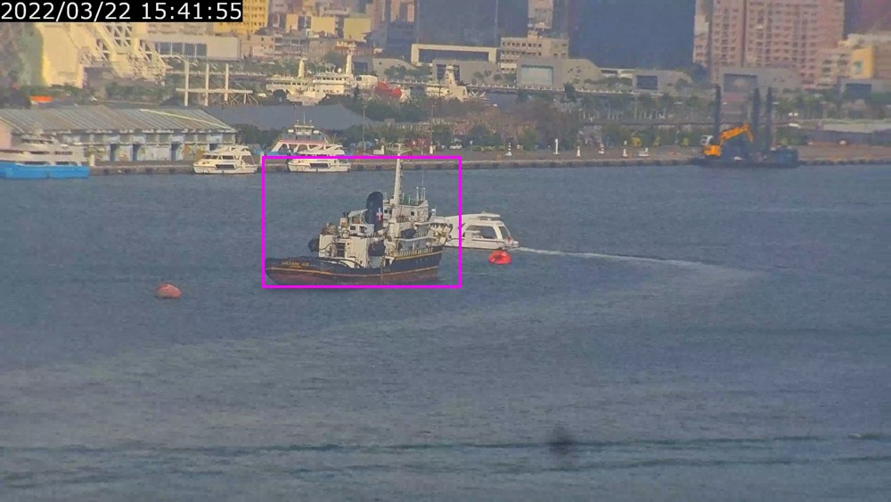
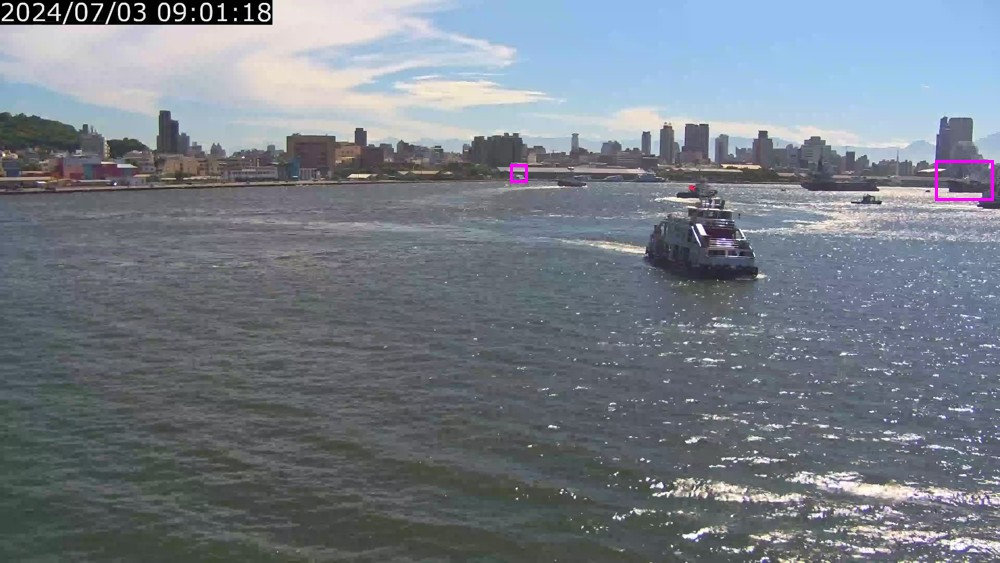
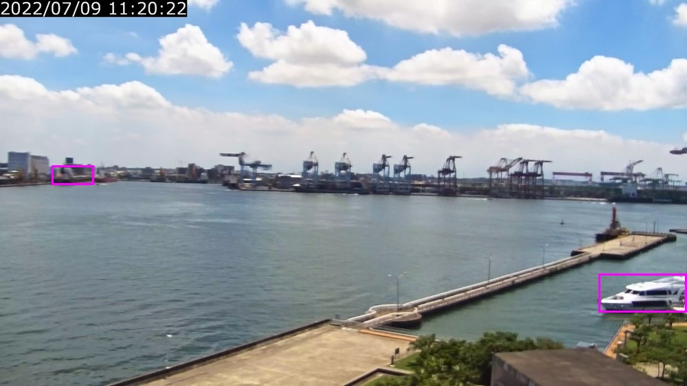

排序檢查
綠：GT 正例；橘：GT 負例；灰：ignore；紅：融合 Top-1。圖片是抽樣案例，不代表全體比例。
摘要 · 逐描述結果 · 負例覆蓋
排序案例
Ch01_2022_07_09_11_00_00_000018360.jpg · 含黑色的船 · wrong_object
1720200707.jpg · 單色白色的船 · wrong_object
標記中的區分樣本
紫框：此組對照涉及的物件；正負關係請依描述與 coverage.json 判讀。
{"split": "train", "filename": "1720204515.jpg", "kind": "same_predicate_different_colors", "phrases": ["單色白色的船", "單色米白色的船"], "object_ids": ["object_0000", "object_0001", "object_0002", "object_0003", "object_0004"]}
{"split": "train", "filename": "Ch01_2022_03_22_15_00_00_000037344.jpg", "kind": "same_color_objects", "phrase": "藍色白色相間的船", "object_ids": ["object_0000", "object_0001"]}
{"split": "train", "filename": "Ch01_2022_03_22_15_00_00_000037344.jpg", "kind": "single_vs_contains", "phrases": ["單色白色的船", "含白色的船"], "object_ids": ["object_0000"]}
{"split": "val", "filename": "1720200707.jpg", "kind": "same_predicate_different_colors", "phrases": ["單色灰色的船", "單色白色的船"], "object_ids": ["object_0000", "object_0001"]}
{"split": "val", "filename": "Ch01_2022_07_09_11_00_00_000018360.jpg", "kind": "same_color_objects", "phrase": "藍色白色相間的船", "object_ids": ["object_0000", "object_0004"]}
{"split": "val", "filename": "Ch01_2022_07_09_11_00_00_000018360.jpg", "kind": "single_vs_contains", "phrases": ["單色白色的船", "含白色的船"], "object_ids": ["object_0000"]}